淇澳—担杆岛自然保护区
华南少见的连片红树林湿地，也是珠海最重要的候鸟越冬地。退潮时滩涂上挤满鹭类、鸻鹬，冬季有黑脸琵鹭稳定越冬。进入核心区需预约，外围基围与堤岸可自由观察。
黑脸琵鹭hēi liǎn pí lù池鹭chí lù苍鹭cāng lù褐翅鸦鹃hè chì yā juān青脚鹬qīng jiǎo yù
最佳：11 月–次年 3 月
Ecological Groups
野外观鸟的第一步不是记住每一种鸟，而是判断它属于哪一类。五个类群，对应五种完全不同的生活方式。
Species Index
按遇见概率从高到低排列，共 65 种——从「几乎一定看得到」的极常见种，到「需要运气」的罕见种。点击任意一种查看辨识要点、习性、鸣声与在珠海的具体观察地点。
 NO. 001
NO. 001
 NO. 002
NO. 002
 NO. 003
NO. 003
 NO. 004
NO. 004
 NO. 005
NO. 005
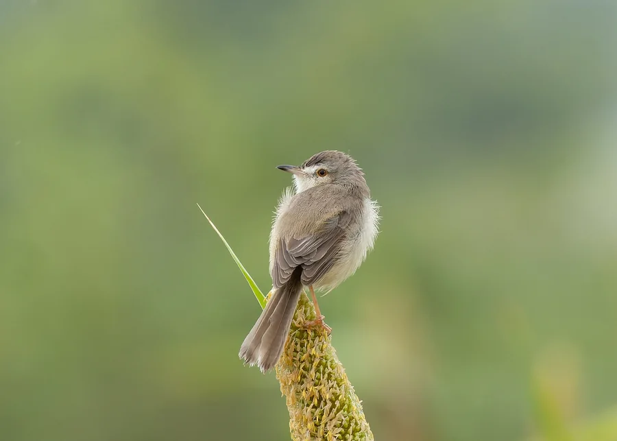
NO. 006 NO. 007
NO. 007
 NO. 008
NO. 008
 NO. 009
NO. 009
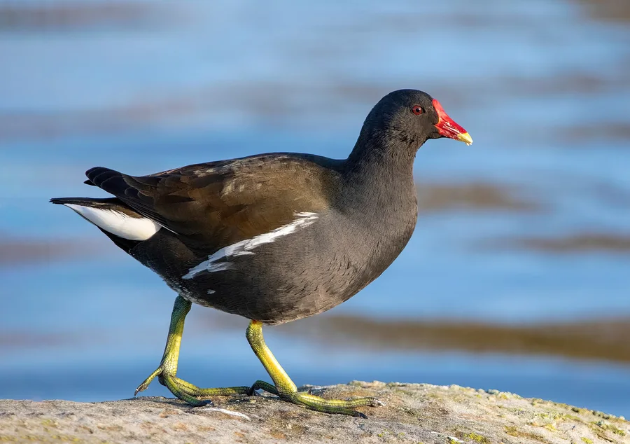
NO. 010 NO. 011
NO. 011
 NO. 012
NO. 012
 NO. 013
NO. 013
 NO. 014
NO. 014
 NO. 015
NO. 015
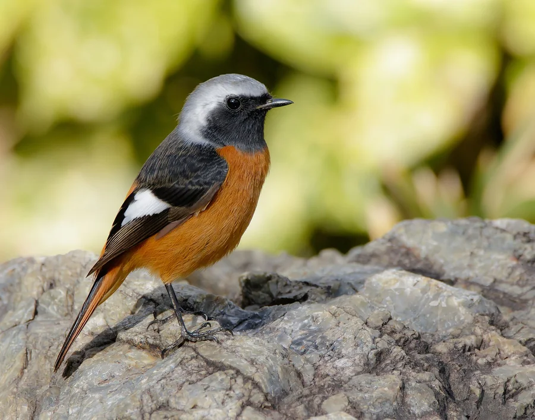
NO. 016 NO. 017
NO. 017
 NO. 018
NO. 018
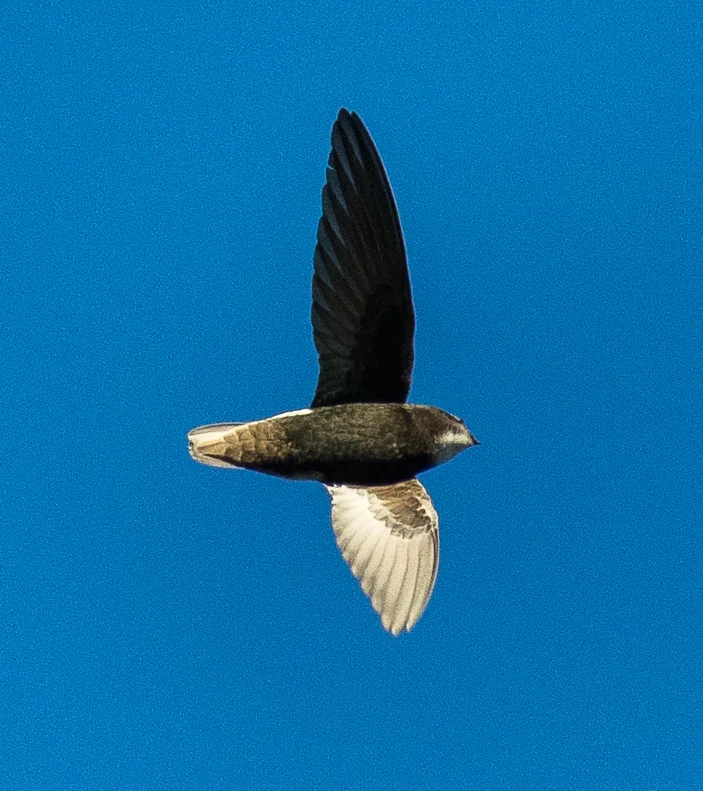
NO. 019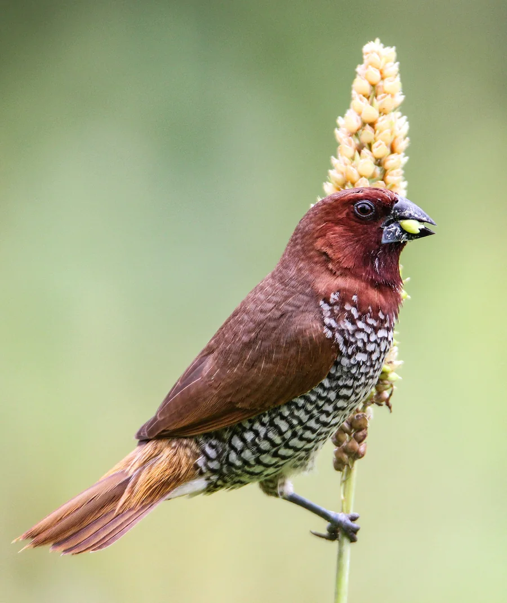
NO. 020 NO. 021
NO. 021
 NO. 022
NO. 022
 NO. 023
NO. 023
 NO. 024
NO. 024
 NO. 025
NO. 025
 NO. 026
NO. 026
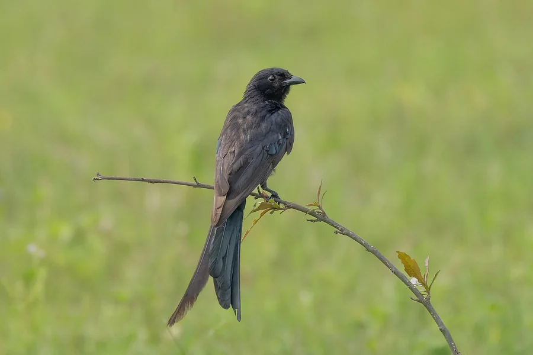
NO. 027 NO. 028
NO. 028
 NO. 029
NO. 029
 NO. 030
NO. 030
 NO. 031
NO. 031
 NO. 032
NO. 032
 NO. 033
NO. 033
 NO. 034
NO. 034
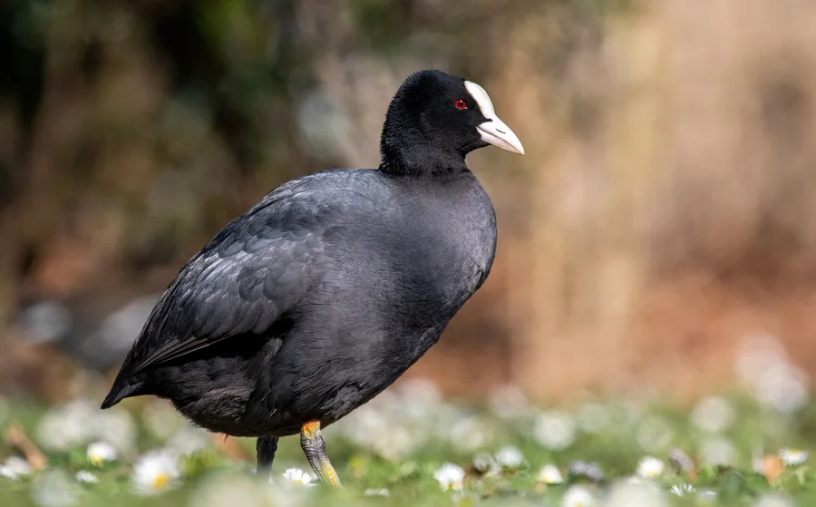
NO. 035 NO. 036
NO. 036
 NO. 037
NO. 037
 NO. 038
NO. 038
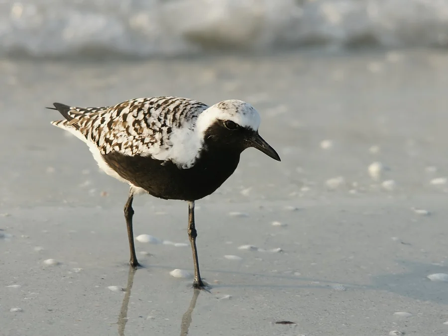
NO. 039 NO. 040
NO. 040
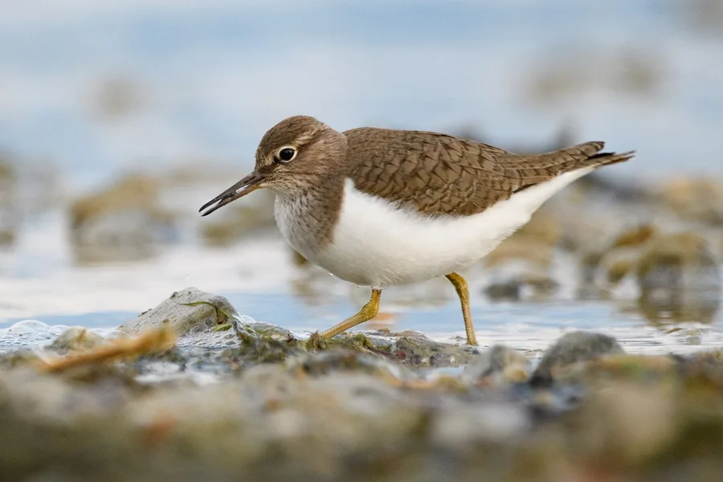
NO. 041 NO. 042
NO. 042
 NO. 043
NO. 043
 NO. 044
国家二级
NO. 044
国家二级
 NO. 045
国家二级
NO. 045
国家二级
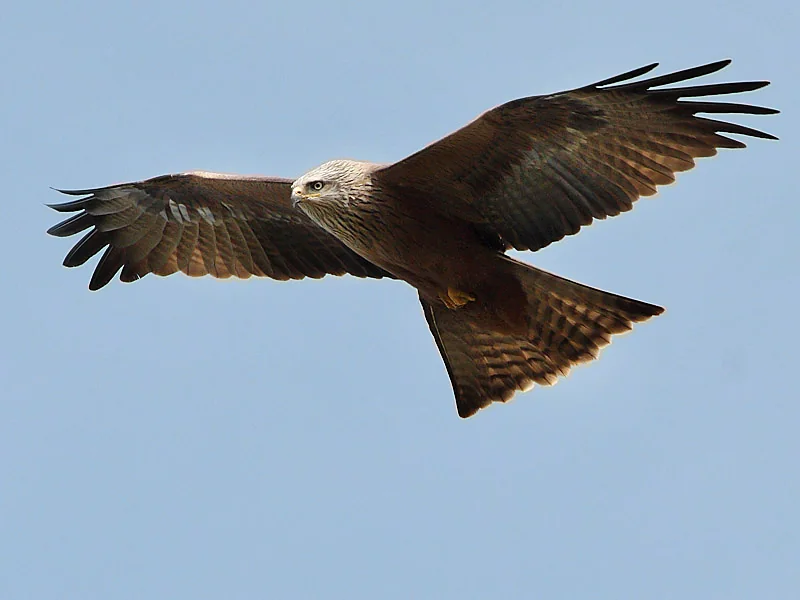
NO. 046 国家二级 NO. 047
NO. 047
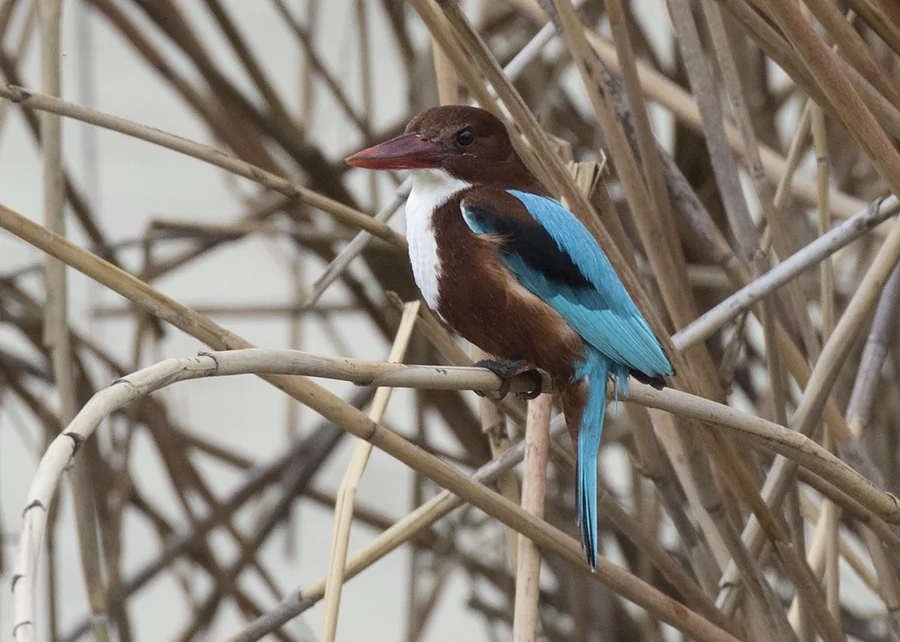
NO. 048 国家二级 NO. 049
NO. 049
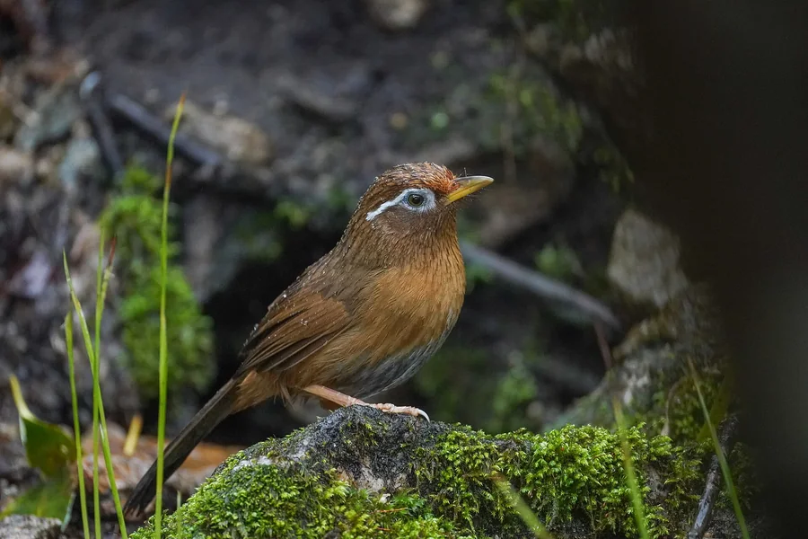
NO. 050 国家二级 NO. 051
国家二级
NO. 051
国家二级
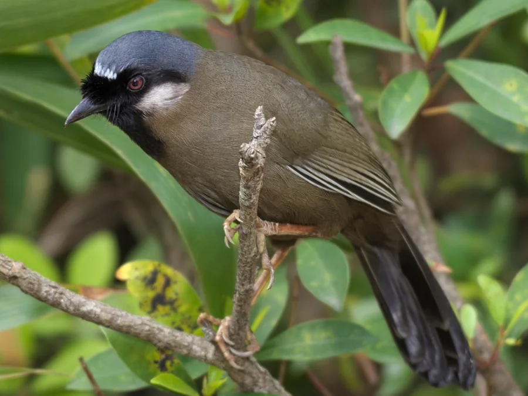
NO. 052 NO. 053
NO. 053
 NO. 054
NO. 054
 NO. 055
NO. 055
 NO. 056
国家二级
NO. 056
国家二级
 NO. 057
国家二级
NO. 057
国家二级
 NO. 058
国家二级
NO. 058
国家二级
 NO. 059
国家二级
NO. 059
国家二级
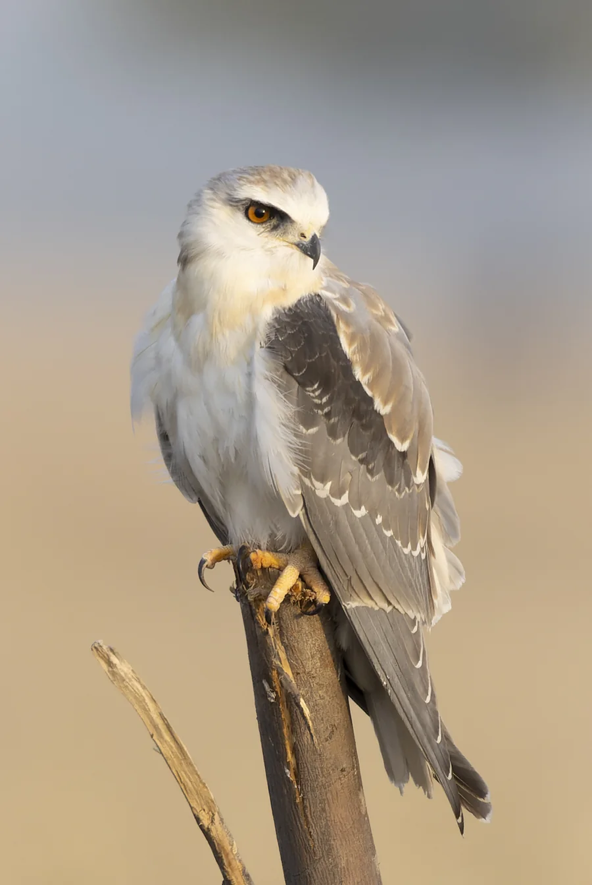
NO. 060 国家二级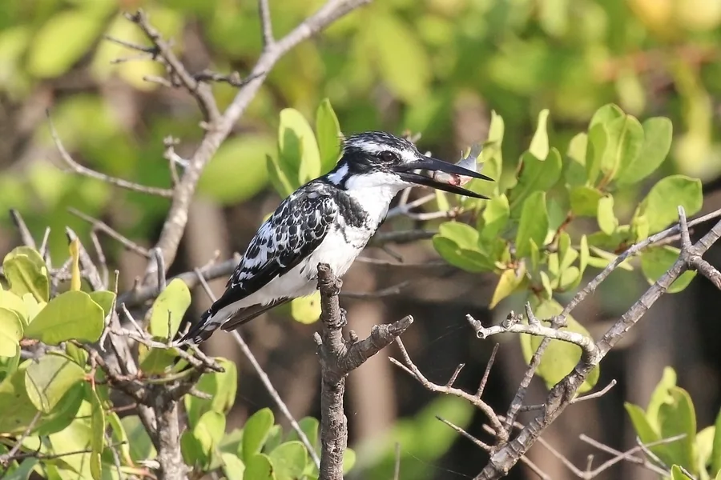
NO. 061 NO. 062
国家二级
NO. 062
国家二级
 NO. 063
国家一级
NO. 063
国家一级
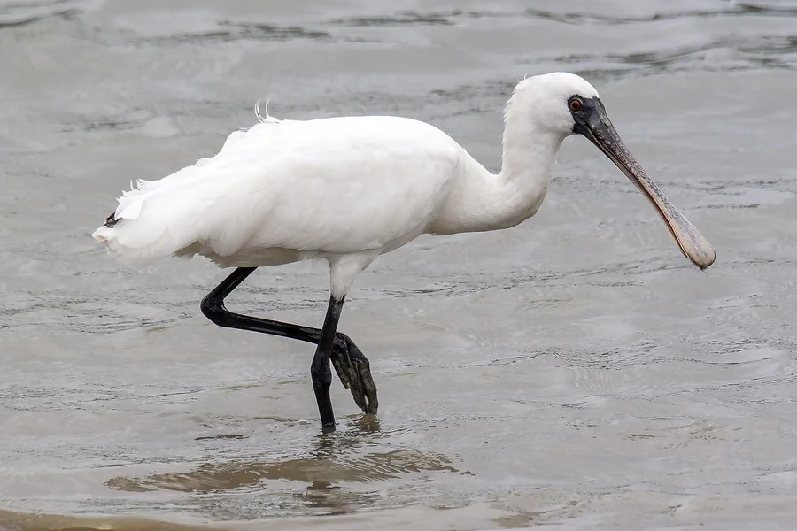
NO. 064 国家一级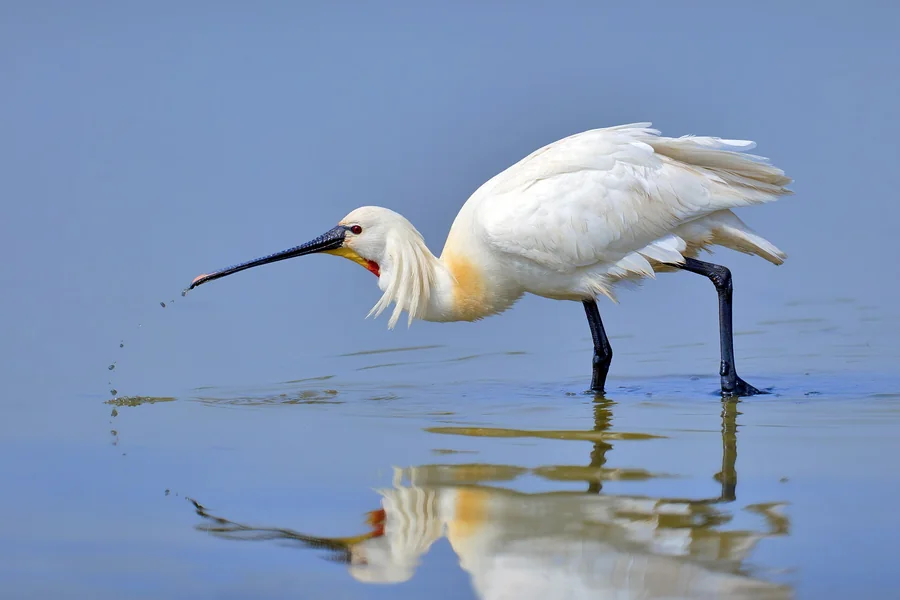
NO. 065 国家二级没有匹配的物种，换个关键词试试。
Where to Watch
珠海的海岸线超过 600 公里，滩涂、红树林、水田与城市公园在很小的半径内并存——这意味着一个周末就能横跨三种完全不同的鸟类群落。以下六处是最容易上手的地点。
华南少见的连片红树林湿地，也是珠海最重要的候鸟越冬地。退潮时滩涂上挤满鹭类、鸻鹬，冬季有黑脸琵鹭稳定越冬。进入核心区需预约，外围基围与堤岸可自由观察。
最佳：11 月–次年 3 月
芦苇荡、红树林与鱼塘交织的人工—自然复合湿地，栈道深入水面，是近距离观察水鸟最舒服的地方。清晨与傍晚光线最好。
全年，秋冬水鸟最多
珠三角西岸保存较好的开阔沙滩与泥滩，退潮后数公里滩面暴露，是鸻鹬类与鸥类的主战场。需要望远镜，注意潮汐表。
最佳：10 月–次年 4 月
城市里的综合公园，湖面、湿地与林带俱全。适合初学者：不用走远，一小时能记录十几种鸟，黑水鸡与小鸊鷉几乎必见。
全年
环岛绿道连着海面与山体，退潮时礁石与沙滩上都有惊喜。冬季海面上有成群红嘴鸥，上空常有黑鸢盘旋。
全年，冬季海鸟最盛
典型的岭南农业湿地景观。田埂、水渠与鱼塘构成密集的水网，是池鹭、翠鸟与伯劳的猎场，也是观察「人鸟共处」最好的窗口。
全年，春耕与秋收前后最热闹
Field Ethics
用望远镜或长焦，不靠近、不驱赶、不追逐。繁殖期与越冬期（11–3 月）尤其要保持距离，一次惊飞可能耗尽它们一天的能量。
播放鸟鸣录音会把鸟从领地、巢区或觅食地引开，长期使用会显著降低繁殖成功率。观察野生行为，比拍到「标准照」重要。
面包会伤害水鸟的消化系统；放生外来物种（如巴西龟、家鸭）会破坏本地生态。让它们自己找吃的。
沙滩上的一个小凹坑可能就是一窝卵。保护区的核心区、缓冲区请勿进入，无人机在鸟类栖息地上空属违规行为。
拍照片、记时间地点、上传到公民科学平台，比带走一根羽毛更有价值。所有野生鸟类在中国均受法律保护。
鱼线、塑料袋、废弃口罩对水鸟是致命的。滩涂上的垃圾请顺手带走，这比任何口号都实际。